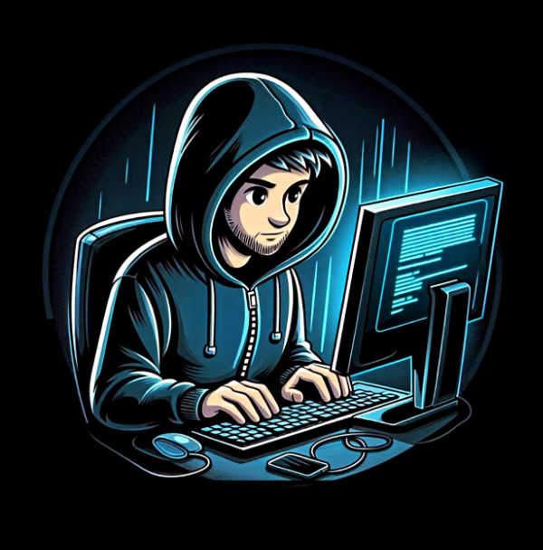

A seasoned Cyber Security Specialist and Full Stack Web Developer with a passion for creating secure and robust digital solutions. With a strong foundation in both front-end and back-end development, I blend technical expertise with innovative thinking to deliver comprehensive web applications that are not only efficient but also resilient against cyber threats. My journey in technology has equipped me with a deep understanding of the complexities of web development and the critical importance of cybersecurity. Whether it's building dynamic user interfaces, developing scalable server-side applications, or implementing stringent security measures, I am dedicated to ensuring that every project I undertake meets the highest standards of quality and security. Explore my work, and let's connect to see how I can help you achieve your digital goals securely and efficiently.!